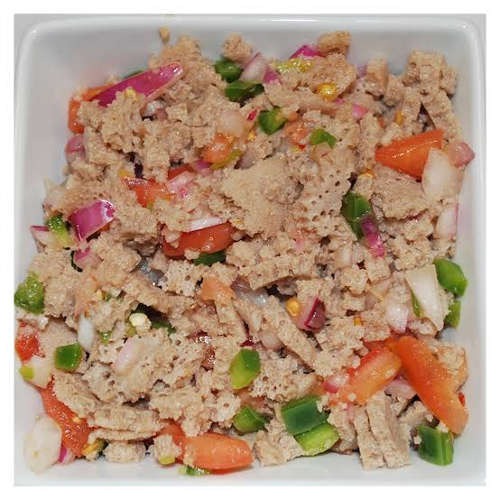
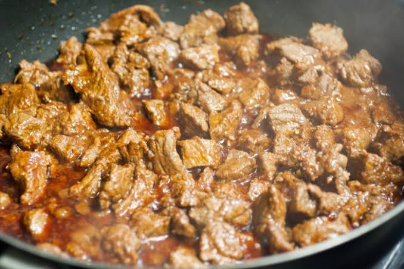
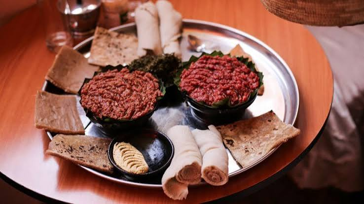
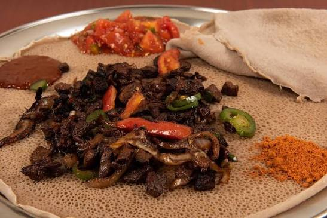
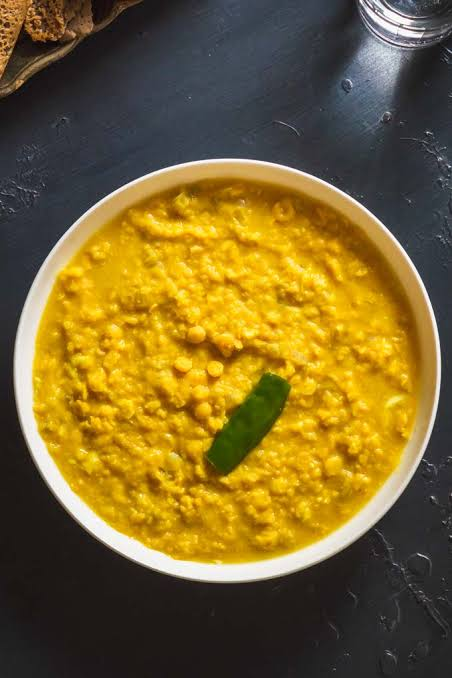

Sambusa
Crispy pastry pockets filled with seasoned lentils or minced beef, onions, and green chilies, fried to a golden, flaky perfection.
60 ETB
Crispy pastry pockets filled with seasoned lentils or minced beef, onions, and green chilies, fried to a golden, flaky perfection.
60 ETB

Scrambled eggs cooked with onions, tomatoes, green peppers, and Ethiopian spices
80 ETB

Fresh tomatoes, onions, green chilies, and shredded injera lightly dressed with olive oil, lemon juice, and traditional seasonings.
75 ETB

Ethiopia's signature spicy chicken stew made with slow-cooked chicken, onions, berbere spice blend, niter kibbeh (spiced clarified butter), garlic, ginger, and a boiled egg.
350 ETB

Tender beef cubes sautéed with onions, tomatoes, green peppers, garlic, and herbs in fragrant niter kibbeh.
320 ETB

Finely minced premium beef, lightly cooked or raw, seasoned with niter kibbeh and mitmita, traditionally served with ayib and gomen.
380 ETB

Rich, slow-simmered beef stew cooked with onions, berbere, garlic, ginger, and niter kibbeh for a deeply spiced, flavorful dish.
300 ETB

Crispy, dry-fried beef seasoned with rosemary, and green chilies for a smoky, savory finish.
350 ETB

A smooth, comforting stew made from finely ground chickpea flour simmered with berbere, onions, garlic, and Ethiopian spices.
180 ETB

Red lentils slow-cooked in a rich berbere sauce with onions and traditional Ethiopian seasonings.
190 ETB

Mild split pea stew gently simmered with turmeric, onions, garlic and fragrant Ethiopian spices
175 ETB

A colorful vegetarian sampler featuring injera served with an assortment of traditional dishes, including shiro, misir wot, alicha kik, gomen, cabbage, and other seasonal vegetable specialties.
250 ETB